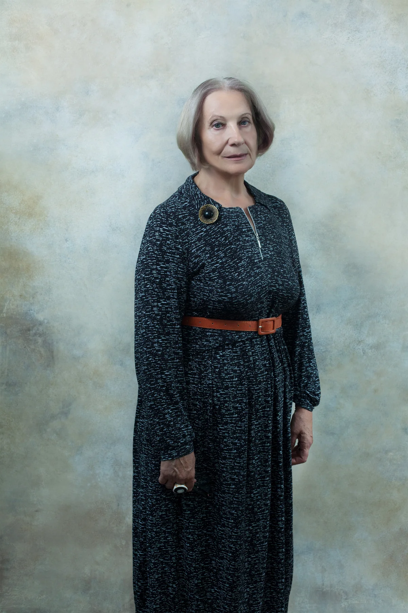
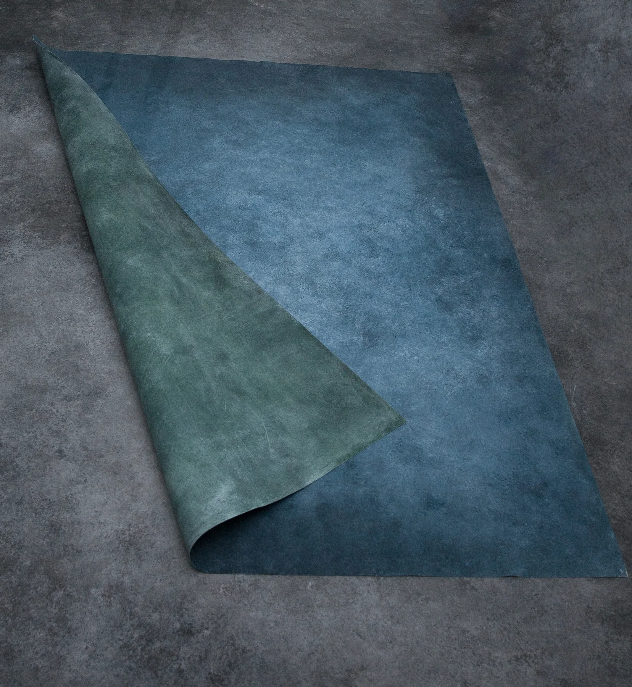
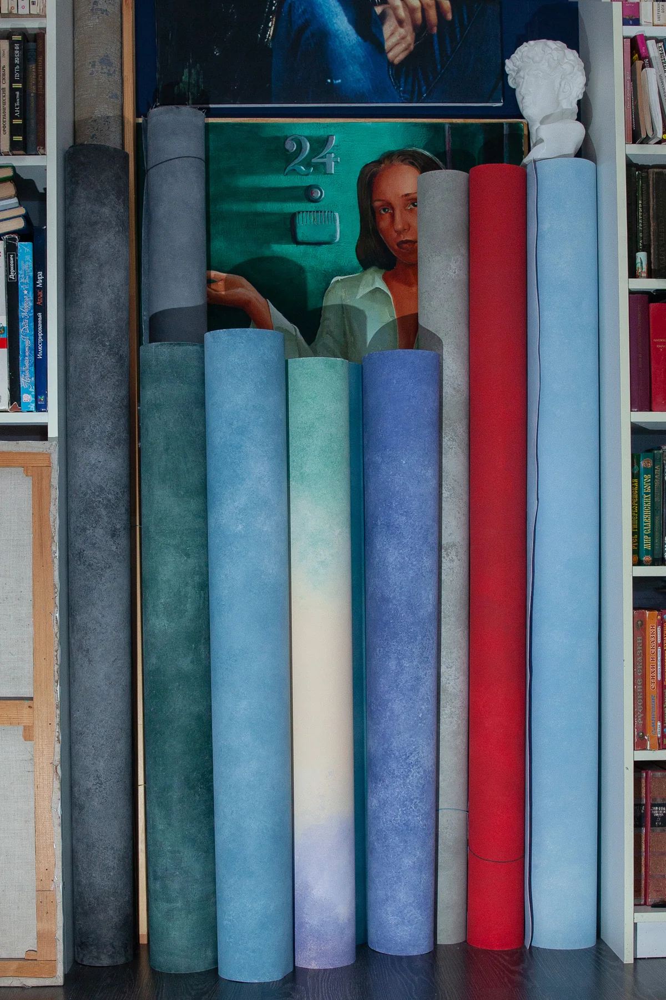

01 / 08
НОВОСИБИРСК · РУЧНАЯ РАБОТА
Холсты, которые создают пространство кадра
Авторские фотофоны для портретной, студийной и предметной съёмки. Живописная фактура, матовая поверхность и уникальный рисунок каждого экземпляра.
Смотреть актуальные работы в VKНе декорация.
Не принт.
Настоящая живописная поверхность.
SELECTED WORKS
Портфолио
Реальные фоны и съёмки на них. Нажмите на фотографию, чтобы открыть полноэкранный просмотр.

COLLECTION
Фактуры и цвета
Большие холсты, камерные форматы и двусторонние решения для разных сценариев съёмки.
О СТУДИИ
Каждый холст создаётся вручную
Основа — холст. Поверхность формируется акриловыми составами и пигментами в несколько слоёв. Матовая защитная обработка помогает работать со светом без лишних бликов.
- Две стороны
- два разных визуальных решения
- Большие форматы
- включая холсты для ростового портрета
- Уникальность
- рисунок каждого фона не повторяется


CANVAS CITY